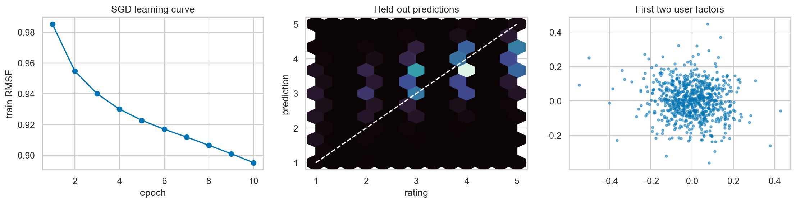

ML Hands-on Lab · 07 — Latent factor and decomposition
Matrix factorization for recommendations
1. The decision and the mechanism
Matrix factorization predicts a user’s rating as a global average, user and item biases, and a learned interaction between short user and item vectors. It can personalize for observed identities, but a new identity has no learned vector yet.
This lesson includes the mechanism, a hand-worked example, and the experiment design. The paired notebook contains the complete runnable setup and produces the diagnostic figure below.
2. Work a small example
An item’s average score and a user’s generous rating style explain some observations without any personalized interaction. The latent factors model what remains: two users can share an average rating but prefer different subsets of items. These dimensions are learned to predict ratings; they are not automatically human labels such as “comedy” or “price sensitivity.”
One rating and one update
Let the global mean be 3.5, user bias +0.2, item bias −0.1, user vector [1, 0.5], and item vector [0.8, −0.2]. Their dot product is 0.7, so predicted rating is 4.3. If the observed rating is 5, error is 0.7. With learning rate 0.01 and penalty 0.1, the first user coordinate changes by 0.01 × (0.7 × 0.8 − 0.1 × 1) = 0.0046. It moves toward the item vector, but shrinkage limits the step.
3. The mathematics, with meanings
\[\hat r_{ui}=\mu+b_u+b_i+p_u^Tq_i\]
μ is the training-set average. The biases describe a user’s scoring tendency and an item’s broad popularity. The dot product captures a user-specific deviation from those tendencies. With k factors, every user and item has k numbers rather than a separate free parameter for every possible pair.
\[\sum_{(u,i)\in\Omega}(r_{ui}-\hat r_{ui})^2+\lambda\left(\sum_u\|p_u\|^2+\sum_i\|q_i\|^2\right)\]
Ω contains observed ratings only. Missing ratings are not zero-star ratings: the user might never have seen the item. Regularization shrinks poorly supported factors. The notebook also regularizes biases during updates. A low error on observed ratings does not automatically establish useful top-k ranking or eliminate exposure bias.
4. Follow the actual experiment
- Use cached MovieLens 100k ratings if available, restricted to the first 50,000 interactions. Otherwise explicitly announce a synthetic low-rank fallback; do not describe that run as a real-data result.
- Map user and item IDs to integer indices, then randomly hold out 20% of rating rows. Compute the global mean from training ratings only.
- Initialize ten-dimensional factor vectors near zero and user/item biases at zero. Shuffle observed training ratings on each of ten epochs.
- For each observed pair, calculate its error and update only that user and item. Save the old user vector before updating so the item update uses the same parameter state.
- Clip predictions to the 1–5 rating range for evaluation. Compare test RMSE against a global-mean prediction and the bias-only part of the learned model.
5. Controls worth changing
| Control | What changing it does | What to inspect |
|---|---|---|
| Latent dimension k = 10 | More dimensions can express richer interactions but require more evidence per identity. | Held-out error and performance for users/items with sparse history. |
| Penalty λ = 0.035 | More shrinkage reduces variance; too much removes personalization. | Compare interaction improvement over the bias-only baseline. |
| Learning rate 0.012 | Controls each SGD step. Too large can oscillate; too small can look stable but learn little. | Training error over epochs, then independently selected validation error. |
| Epochs: 10 | More passes may fit useful structure or memorize sparse ratings. | Choose stopping on validation, not repeated checks of the test set. |
6. Read the result and its limits
The learning curve checks whether SGD is optimizing its training objective. The held-out RMSE comparison asks whether factors add value beyond simple baselines. Read the prediction/diagnostic panel with the 1–5 bounds in mind: clipping may hide extreme raw predictions. If factorization barely improves on bias-only predictions, its added storage and serving complexity may not be worthwhile.

This is a random rating holdout. It does not test an unseen user, an unseen item, or a future period, and it does not measure ranking quality among items that were never rated. Cached data and synthetic fallback can give very different results. For an actual recommendation claim, define exposure, candidate selection, time boundaries, and cold-start cohorts explicitly.
7. Code that exposes the mechanism
The notebook implements the updates directly rather than delegating them to a recommender library. This excerpt is its SGD core, formatted to make the old-vector dependency visible. Arrays and the training global mean are initialized in the complete notebook.
for epoch in range(10):
for index in rng.permutation(len(rows)):
u, i, rating = rows[index]
u, i = int(u), int(i)
prediction = global_mean + bu[u] + bi[i] + P[u] @ Q[i]
error = rating - prediction
old_user = P[u].copy()
bu[u] += lr * (error - reg * bu[u])
bi[i] += lr * (error - reg * bi[i])
P[u] += lr * (error * Q[i] - reg * P[u])
Q[i] += lr * (error * old_user - reg * Q[i])Both factor updates should use the original pair of vectors for this step. Otherwise the update order subtly changes the optimization. The factor coordinates are not uniquely identifiable: an appropriate joint rotation can change their interpretation while preserving dot products.
8. Break an assumption
A new user has no fitted P[u] or bu[u]. The notebook compares a known user’s predictions with the new-user fallback global_mean + item_bias. The fallback can rank broadly popular items, but it contains no evidence about that person.
- Compare interaction-based predictions with the bias-only version for the most active user. Which items move and why?
- Create an evaluation split that removes all ratings from selected users. The ordinary random-rating result does not answer this new question.
- Try a lower factor dimension and stronger regularization. Explain whether the interaction term earns its complexity over biases.
9. When to use it and what comes next
Use this as an explicit baseline for collaborative recommendation when enough repeated identities exist. Content features and hybrid models can help with cold start; implicit-feedback models need objectives appropriate to clicks or exposure rather than treating missing entries as low ratings. A temporal test and a ranking metric are the next step before making a product claim.